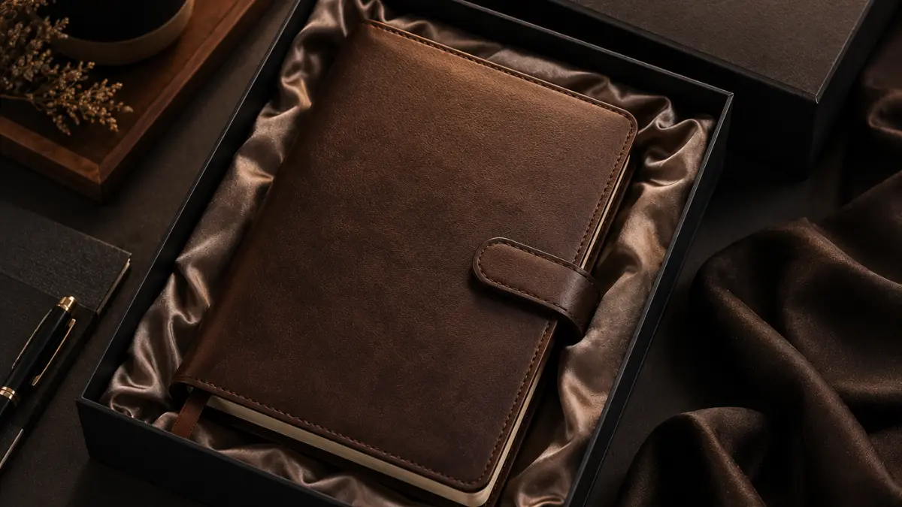
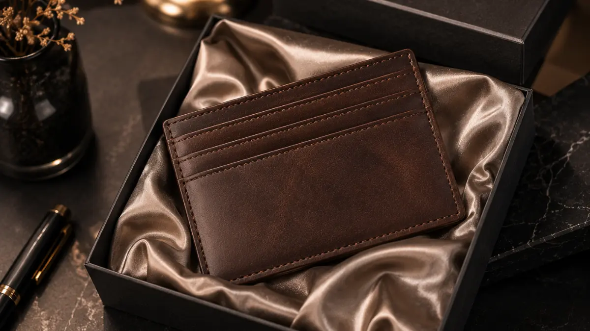

Koleksi Souvenir Kantor Premium Berbahan Kulit Asli yang Tampil Berkelas
 Hawa Nadira (haw)
1 Agustus 2026
4 Menit Baca
Hawa Nadira (haw)
1 Agustus 2026
4 Menit Baca

Souvenir kantor premium berbahan kulit asli menawarkan kesan mewah dan tahan lama, menjadikannya pilihan populer untuk hadiah klien penting maupun apresiasi karyawan senior. Kulit asli memberikan tekstur dan tampilan yang lebih alami dibandingkan kulit sintetis. Produk populer meliputi notebook, dompet kartu, dan tas kerja berbahan kulit. Perawatan sederhana dapat memperpanjang usia pakai produk kulit asli.
Souvenir kantor premium berbahan kulit asli menawarkan kesan mewah dan tahan lama, menjadikannya pilihan populer untuk hadiah klien penting maupun apresiasi karyawan senior. Kulit asli memberikan tekstur dan tampilan yang lebih alami dibandingkan kulit sintetis. Produk populer meliputi notebook, dompet kartu, dan tas kerja berbahan kulit. Kulit asli umumnya semakin menarik seiring waktu jika dirawat dengan benar. Harga souvenir kulit asli cenderung lebih tinggi dibandingkan bahan sintetis. Perawatan sederhana dapat memperpanjang usia pakai produk kulit asli.
Mengapa Souvenir Kulit Asli Dianggap Lebih Berkelas?
Souvenir kulit asli dianggap lebih berkelas karena teksturnya yang alami, aroma khas, dan tampilan yang semakin matang seiring pemakaian.
Berbeda dengan kulit sintetis yang cenderung memiliki tampilan seragam dan tekstur buatan, kulit asli memiliki serat dan pola alami yang membuat setiap produk terlihat unik. Karakteristik ini sering diasosiasikan dengan kesan mewah dan personal, sehingga cocok digunakan sebagai hadiah untuk relasi bisnis penting.
Selain aspek visual, kulit asli juga umumnya lebih tahan lama jika dirawat dengan baik, sehingga nilai investasinya dianggap sepadan dengan harga yang lebih tinggi dibandingkan bahan sintetis.

Produk Apa Saja yang Termasuk Kategori Ini?
Kategori souvenir kulit asli umumnya mencakup notebook bersampul kulit, dompet kartu nama, tas kerja atau tote bag kulit, serta aksesori meja seperti alas mouse dan tempat pulpen.
Notebook Kulit Asli
Kombinasi fungsi menulis dan kesan formal yang kuat. Menjadi salah satu produk paling diminati untuk souvenir korporat.
Dompet Kartu Nama
Ukuran kecil namun kesan eksklusifnya cukup terasa saat digunakan dalam pertemuan bisnis.
Tas Kerja / Tote Bag
Biasanya dipilih untuk gift set kelas atas, misalnya untuk klien VIP atau mitra strategis.
Aksesori Meja
Alas mouse dan tempat pulpen berbahan kulit memberikan sentuhan elegan di meja kerja.
Dompet kartu nama berbahan kulit juga populer sebagai souvenir personal karena ukurannya kecil namun kesan eksklusifnya cukup terasa saat digunakan dalam pertemuan bisnis. Tas kerja atau tote bag kulit biasanya dipilih untuk gift set kelas atas, misalnya untuk klien VIP atau mitra strategis, karena harganya yang lebih tinggi sebanding dengan kesan yang ingin disampaikan perusahaan.
Bagaimana Cara Merawat Souvenir Berbahan Kulit Asli?
Perawatan souvenir kulit asli dilakukan dengan menghindari paparan air dan sinar matahari langsung, serta membersihkannya secara berkala menggunakan kain lembut.
Hindari Air
Paparan air dapat merusak serat kulit dan meninggalkan noda permanen. Segera lap jika terkena air.
Hindari Sinar Matahari Langsung
Sinar matahari langsung dapat menyebabkan kulit mengering, retak, dan berubah warna.
Bersihkan dengan Kain Lembut
Lap secara berkala menggunakan kain microfiber untuk menghilangkan debu dan kotoran.
Gunakan Pelembap Khusus Kulit
Aplikasikan pelembap secara berkala untuk menjaga kelenturan permukaan agar tidak mudah retak.
Produk kulit asli sebaiknya disimpan di tempat kering dan tidak lembap untuk mencegah munculnya jamur atau perubahan warna. Penggunaan cairan pelembap khusus kulit secara berkala juga dapat membantu menjaga kelenturan permukaan agar tidak mudah retak. Selain itu, hindari menumpuk barang berat di atas produk kulit dalam waktu lama karena dapat meninggalkan bekas lipatan permanen.
Dengan perawatan yang tepat, souvenir kulit asli dapat bertahan digunakan dalam jangka waktu yang cukup panjang tanpa kehilangan tampilan elegannya.
Butuh Souvenir Kulit Asli untuk Perusahaan Anda?
Konsultasikan kebutuhan souvenir kantor premium berbahan kulit asli dengan tim kami untuk mendapatkan rekomendasi produk terbaik.
Konsultasi SekarangKesimpulan
Souvenir kantor premium berbahan kulit asli menjadi pilihan tepat bagi perusahaan yang ingin menghadirkan kesan eksklusif dan tahan lama melalui corporate gift. Dengan pemilihan produk yang sesuai serta perawatan yang konsisten, souvenir kulit asli dapat menjadi representasi kualitas brand dalam jangka panjang.
FAQ Seputar Souvenir Kantor Berbahan Kulit Asli